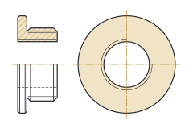
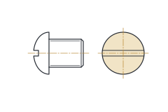
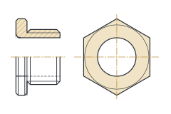
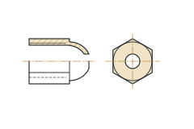

Brass cable glands & accessories
Two gland types and a pressure screw in PG and metric threads, and accessories that also come in BSP and NPT. Every item has a part code you can add to a quote.
- Threads
- PG DIN 40430 · M EN 60423
- Material
- CW614N; lead-free on request
- Finish
- Natural, or plated in our plant: nickel, tin or zinc
Gland names changed to generic ones on 2026-11-14 (former JACOB GmbH names). Which glands these parts fit and for which customers: question 0.1; sizes and clamping data: questions 4–8.
Cable glands
All three take the same accessories. Choose by how the cable must be held.

| Type | How the cable is held | Cable range | Sizes | Code |
|---|---|---|---|---|
| Clamping‑jaw | Clamping jaws grip the cable (traction relief) | TBC | PG · M confirm | AG-CJ |
| Pressure screw | Gland component: tightened onto the body, it compresses the seal around the cable | — | PG · M confirm | AG-PS |
| Strain-relief | Pressing screw with bending protection: strain and traction relief for flexible cables | TBC | PG · M confirm | AG-SR |
Size ranges per type (PG 7–48, M12–M63 in the previous catalogue) to confirm (question 4).
Used in distribution boxes and control cabinets, machinery, automation and plant engineering. Glands to your own drawing on request confirm.
Gland accessories
Fitting, adapting, closing and earthing cable entries.
 Lock nutsStandard and EMC · AG-LN · AG-LE
Lock nutsStandard and EMC · AG-LN · AG-LE

Reducers, enlargers & adaptersChange an entry's size or thread · AG-RD · AG-EN · AG-AD
Stop plugsClose unused entries · AG-SP Earth tagsEarth bond at the entry · AG-ET
Earth tagsEarth bond at the entry · AG-ET

Conduit gland partsMale bushes, conduit nuts · AG-MB · AG-CN
Spare partsDome cap nuts and seal inserts for our glands, on requestBuying the standard range
What distributors and panel builders ask before the first order.
- Stock
- Made to order or from stock TBC; lead time per order in the quote
- Packing unit
- Pieces per pack and weight per size TBC
- Quoting
- Add sizes with + Add on each datasheet and send them in one request; finish is chosen per line
- Drawings & CAD
- Dimensioned drawing with every quote; CAD files on request
- Catalogue
- Cable-gland catalogue PDF, free download once published · Downloads
- Compliance
- RoHS (Annex III 6(c)) · REACH/SCIP and EN 62444 TBC · not for Ex / ATEX areas unless certified confirm
PG or metric?
PG is the older German conduit thread. Metric to EN 60423 is the default for new enclosures in Europe. Reducers and adapters connect the two.
| Thread | Standard | Flank angle | Sizes | Chart |
|---|---|---|---|---|
| PG | DIN 40430 | 80° | PG 7 – PG 48 | PG chart |
| M×1.5 | EN 60423 | 60° | M12 – M63 | Metric chart |
| G (BSP) | ISO 228-1 | 55° | Accessories 3/8 – 1½" | BSP chart |
| NPT | ASME B1.20.1 | 60° | Accessories 3/8 – 1½" | NPT chart |
Need a special thread, length or finish?
Special threads, lengths and finishes are routine. Send a drawing or a sample.